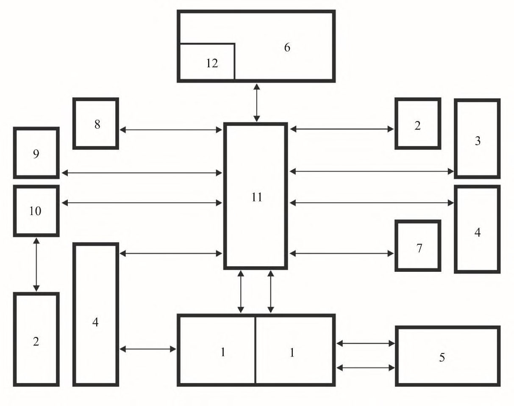
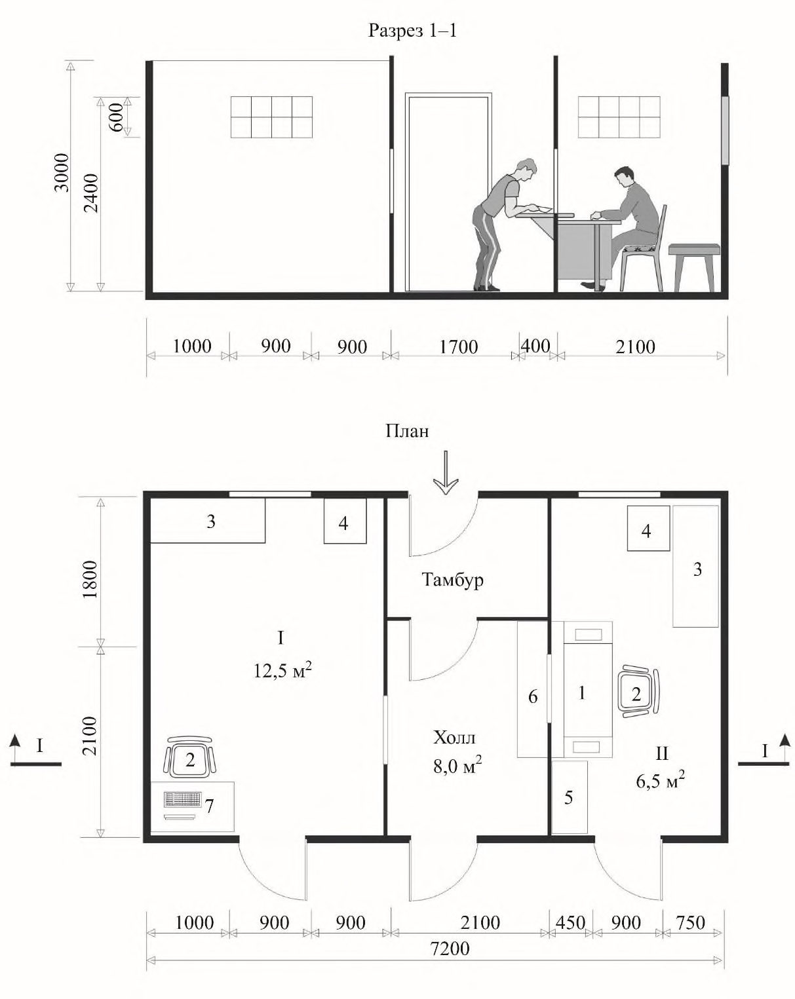
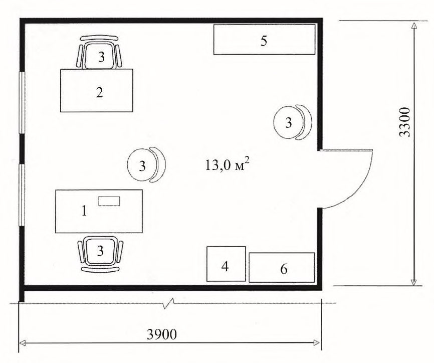
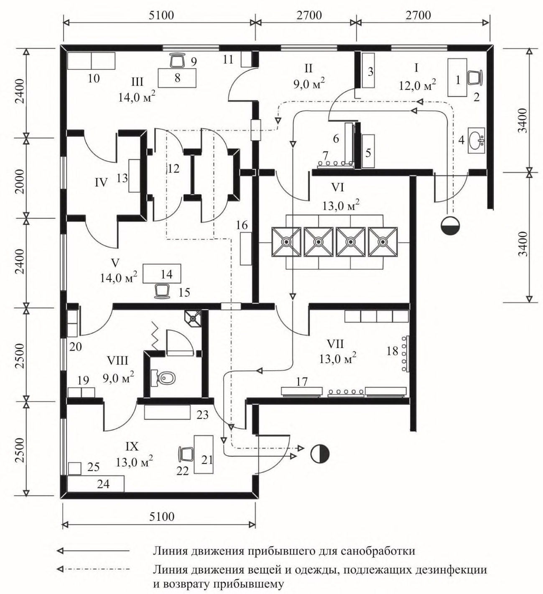
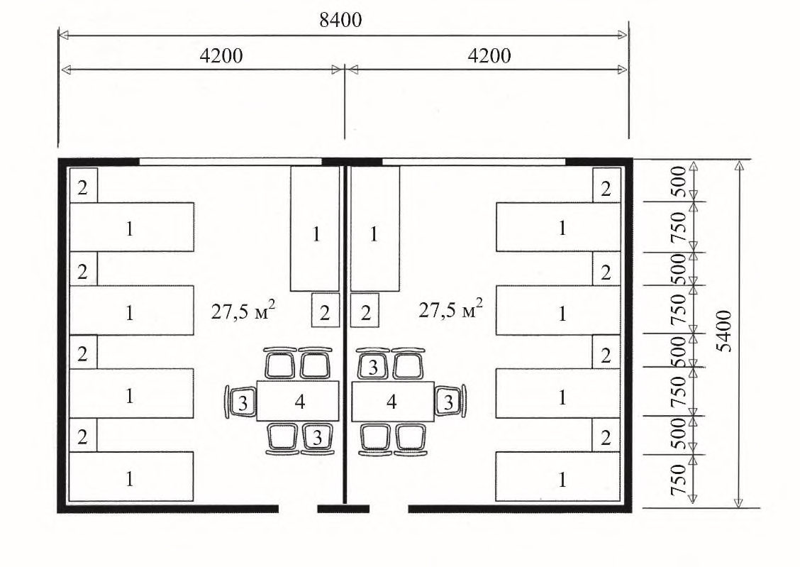
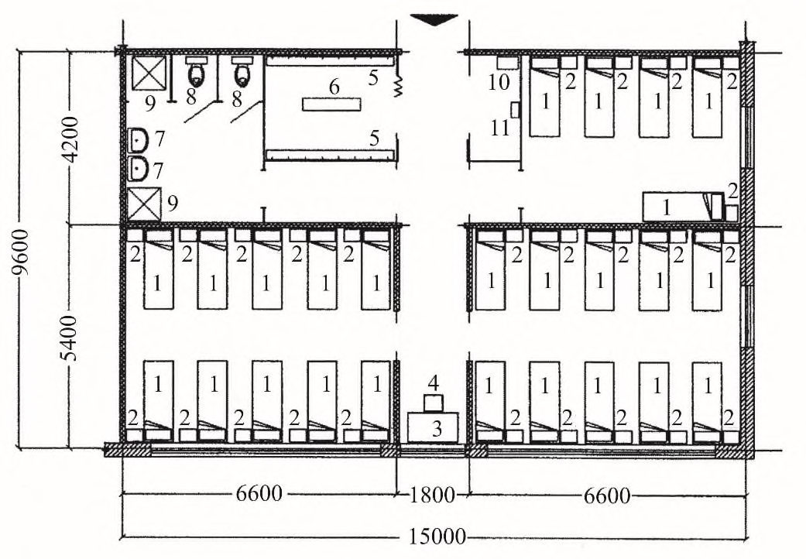
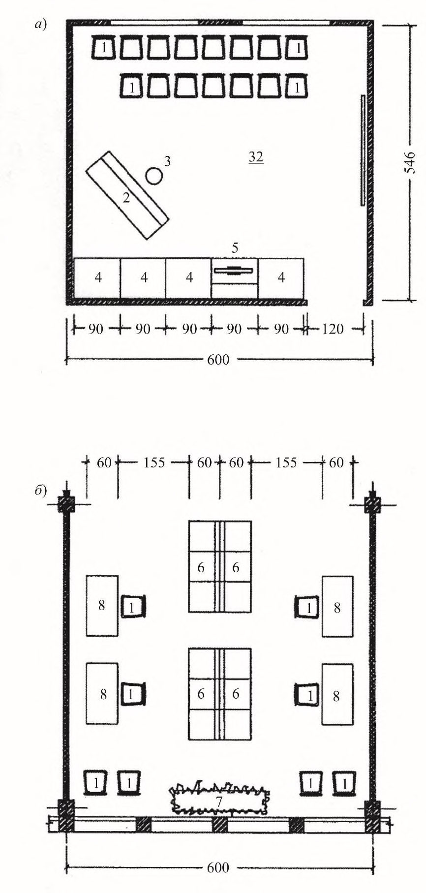

СП 143.13330.2012 «Помещения для досуговой и физкультурно-оздоровительной деят»
О документе: разработчики, утверждение, регистрация, ключевые слова
Цели и принципы стандартизации в Российской Федерации установлены Федеральным законом от 27 декабря 2002 г. №184-ФЗ «О техническом регулировании», а правила разработки -постановлением Правительства Российской Федерации от 19 ноября 2008 г. № 858 «О порядке разработки и утверждения сводов правил»
- 1 ИСПОЛНИТЕЛИ: ООО «Институт общественных зданий» и ОАО «ЦНИИЭП жилища»
- 2 ВНЕСЕН Техническим комитетом по стандартизации ТК 465 «Строительство»
- 3 ПОДГОТОВЛЕН к утверждению Управлением градостроительной политики
- 4 УТВЕРЖДЕН приказом Федерального агентства по строительству и жилищнокоммунальному хозяйству (Госстрой) от 27 декабря 2012 г. № 123/ГС и введен в действие с 1 июля 2013 г.
- 5 ЗАРЕГИСТРИРОВАН Федеральным агентством по техническому регулированию и метрологии (Росстандарт)
- 6 ВВЕДЕН ВПЕРВЫЕ
Информация об изменениях к настоящему своду правил публикуется в ежегодно издаваемом информационном указателе «Национальные стандарты», а текст изменений и поправок -в ежемесячно издаваемых информационных указателях «Национальные стандарты». В случае пересмотра (замены) или отмены настоящего свода правил соответствующее уведомление будет опубликовано в ежемесячно издаваемом информационном указателе «Национальные стандарты». Соответствующая информация, уведомление и тексты размещаются также в информационной системе общего пользования - на официальном сайте Росстандарта в сети Интернет
Настоящий нормативный документ не может быть полностью или частично воспроизведен, тиражирован и распространен в качестве официального издания на территории Российской Федерации без разрешения Госстроя
Дата введения 2013-07-01
УДК [69+725.011] (083.74)
ОКС 01.040.93
ОКП 74.20
Ключевые слова: здания центров ресоциализации, основные функциональные группы помещений, групповая ячейка, параметры помещений, сопутствующие групповым ячейкам помещения, обеспечение надежности и безопасности, обеспечение санитарноэпидемиологических требований.
Введение
Настоящий свод правил разработан в соответствии с Федеральным законом от 30 декабря 2009 г. № 384-ФЗ «Технический регламент о безопасности зданий и сооружений».
Свод правил устанавливает требования, соответствующие современной нормативной базе, науке и технике, в целях совершенствования деятельности учреждений социальной помощи для лиц, занимающихся бродяжничеством и нуждающихся в социальной помощи.
В настоящем своде правил учтены требования Федеральных законов [1], [2].
Свод правил выполнен: ООО «Институт общественных зданий» (руководитель работы, канд. архит. А.М. Гарнец ; отв. исполнитель канд. архит. Т.А. Исаева ; исполнители -инж. Л.В. Сигачева , инж. Н.И. Чернозубова ; компьютерная графика: канд. техн. наук А.И. Цыганов , инж. И.Р. Домрачева ); при участии ОАО «ЦНИИЭП жилища» (канд. архит., проф. А.А. Магай , канд. архит. Н.В. Дубынин ); ФМБА России, «Федеральное медико-биологическое агентство России» (д-р мед. наук, проф. Н.Ф. Дементьева ); ДСЗН «Департамент социальной защиты населения города Москвы» (канд. соц. наук А.В. Пентюхов ).
1Область применения
2Нормативные ссылки
В настоящем своде правил даны ссылки на следующие нормативные документы: ГОСТ 12.1.004-91 «ССБТ. Пожарная безопасность. Общие требования»
СП 5.13130.2009 «Системы противопожарной защиты. Установки пожарной сигнализации и пожаротушения автоматические. Нормы и правила проектирования»
СП 30.13330.2012 «СНиП 2.04.01-85* Внутренний водопровод и канализация зданий»
- СП 52.13330.2011 «СНиП 23-05-95* Естественное и искусственное освещение»
- СП 54.13330.2011 «СНиП 31-01-2003 Здания жилые многоквартирные»
- СП 59.13330.2012 «СНиП 35-01-2001 Доступность зданий и сооружений для маломобильных групп населения»
СП 132.13330.2011 «Обеспечение антитеррористической защищенности зданий и сооружений. Общие требования проектирования»
СП 133.13330.2012 «Сети проводного радиовещания и оповещения в зданиях и сооружениях»
СанПиН 2.1.2.2564-09 «Гигиенические требования к размещению, устройству, оборудованию, содержанию объектов организаций здравоохранения и социального обслуживания, предназначенных для постоянного проживания престарелых и инвалидов, санитарно-гигиеническому и противоэпидемиологическому режиму их работы».
Примечание - При пользовании настоящим сводом правил целесообразно проверить действие ссылочных стандартов и сводов правил в информационной системе общего пользования - на официальном сайте национального органа Российской Федерации по стандартизации в сети Интернет или по ежегодно издаваемому информационному указателю «Национальные стандарты», который опубликован по состоянию на 1 января текущего года, и по соответствующим ежемесячно издаваемым информационным указателям, опубликованным в текущем году. Если ссылочный документ заменен (изменен), то при пользовании настоящим сводом правил следует руководствоваться
ЗДАНИЯ ЦЕНТРОВ РЕСОЦИАЛИЗАЦИИ. ПРАВИЛА ПРОЕКТИРОВАНИЯ
The buildings of social service centres. Rules of architectural design
СП 142.13330.2012
замененным (измененным) документом. Если ссылочный документ отменен без замены, то положение, в котором дана ссылка на него, применяется в части, не затрагивающей эту ссылку.
3Термины и определения
- 3.1комнаты временного приема
- Помещения временного приема для людей, оказавшихся в тяжелой жизненной ситуации.
- 3.2лица, занимающиеся бродяжничеством
- Граждане, нуждающиеся в создании условий для самореализации основных жизненных потребностей в социальной, психологической, материальной, моральной и медицинской помощи.
- 3.3санпропускник
- Совокупность бытовых, медицинских помещений в учреждении временного пребывания с санитарно-гигиеническим оборудованием для медицинского осмотра прибывших лиц, проведения с ними санитарной обработки и обеспечения их чистой одеждой.
- 3.4центр ресоциализации
- Учреждение, основными задачами которого является предоставление гражданам, занимающимся бродяжничеством и оказавшихся в трудной ситуации, социальных услуг (бытовых, медицинских, психологических, экономических).
4Основные положения
5Земельный участок
6Архитектурно-планировочные решения
6.1Общие положения
6.2Входная группа помещений
6.3Санпропускник
СП 142.13330.2012
6.4Жилые помещения и ячейки
6.5Санитарно-гигиенические помещения
6.6Помещения общественного питания
Таблица 1
| Наименование помещений | Вместимость отделений ЦР | Вместимость отделений ЦР | Вместимость отделений ЦР | Вместимость отделений ЦР |
|---|---|---|---|---|
| Наименование помещений | 50 | 100 | 200 | 300 |
| Буфет (для дневного отделения) | Эпизодическое посещение, проектируется в соответствии с приложением А настоящего свода правил | Эпизодическое посещение, проектируется в соответствии с приложением А настоящего свода правил | Эпизодическое посещение, проектируется в соответствии с приложением А настоящего свода правил | Эпизодическое посещение, проектируется в соответствии с приложением А настоящего свода правил |
| Столовая | Количество посадочных мест при питании в 2 смены | Количество посадочных мест при питании в 2 смены | Количество посадочных мест при питании в 2 смены | Количество посадочных мест при питании в 2 смены |
| (для ночного и круглосуточного отделений) | 20 - 25 | 40 - 50 | 80 - 100 | 120 - 150 |
6.7Административно-хозяйственные и бытовые помещения
Расчетная численность сотрудников (штатное расписание) для учреждений социальной защиты уточняется при составлении задания на проектирование.
6.8Медицинские помещения
Расчетное число мест в изоляторе принимается до 6 в зависимости от вместимости учреждения из расчета 1 место на 50 чел.
6.9Помещения отдыха и психологической реабилитации
7Инженерное оборудование
СП 142.13330.2012
закрываться экранами. В качестве нагревательных приборов системы водяного отопления следует принимать радиаторы или конвекторы.
Центр ресоциализации должен быть оборудован системами приточно-вытяжной вентиляции с механическим побуждением и естественной вытяжкой без механического побуждения. Вытяжная вентиляция с механическим побуждением предусматривается из помещений автоклавных моек, душевых, уборных, санитарных комнат, помещений для грязного белья, временных хранений отходов и кладовых для хранения дезинфекционных средств.
В жилых комнатах допускается оборудование естественной вентиляции по СП 60.13330 и СанПиН 2.1.2.2564.
АПриложение А (рекомендуемое). Минимальный состав помещений, площадей и оборудования центров ресоциализации с дневным и ночным отделениями
Таблица А.1
| Помещение | Количество | Площадь, м² , при вместимости учреждения, мест | Площадь, м² , при вместимости учреждения, мест | Площадь, м² , при вместимости учреждения, мест |
|---|---|---|---|---|
| 50 | 100 | 200 | ||
| 1 Дневное отделение | 1 Дневное отделение | 1 Дневное отделение | 1 Дневное отделение | 1 Дневное отделение |
| Вестибюль - обособленное организованное место для дневного отделения | 1 | 0,8 м² /место | ||
| Комната вахтера | 1 | 6 | ||
| Административно-служебные помещения | Административно-служебные помещения | Административно-служебные помещения | Административно-служебные помещения | Административно-служебные помещения |
| Комната социальных работников по приему, обслуживанию граждан дневного отделения | 1 помещение на трех социальных работников | 18 | ||
| Дежурный администратор | 1 | 8 | ||
| Санитарно-гигиенические помещения | Санитарно-гигиенические помещения | Санитарно-гигиенические помещения | Санитарно-гигиенические помещения | Санитарно-гигиенические помещения |
| Дежурная медсестра | 1 | 10 | ||
| Совмещенный санузел с душем (для инвалида) | 1 | 5,4 | ||
| Досуговое помещение | Досуговое помещение | Досуговое помещение | Досуговое помещение | Досуговое помещение |
| Холл с телевизором | 1 | 25 | 45,0 | |
| Буфет | 1 | 12 | ||
| Помещение для уборочного инвентаря | 1 | 2 | ||
| 2 Ночное отделение | 2 Ночное отделение | 2 Ночное отделение | 2 Ночное отделение | 2 Ночное отделение |
| Вестибюль - обособленное организованное место для ночного отделения | 1 | 0,8 | м² /место | |
| Комната охранника | 1 | 8 | ||
| Комната временного приема | 1 | 12,0 | ||
| Санузел (при комнате охранника) | 1 | 3,5 | ||
| Административно-служебные помещения | Административно-служебные помещения | Административно-служебные помещения | Административно-служебные помещения | Административно-служебные помещения |
| Комната дежурного персонала | 1 | 8 | ||
| Комната социальных работников по учету, приему и обслуживанию граждан | 2 | 8+8 | ||
| Санузел для персонала, раздельный для мужчин и женщин | 1 | 4,2 | ||
| Комната сестры-хозяйки | 1 | 8 |
СП 142.13330.2012
Продолжение таблицы А.1
| Помещение | Количество | Площадь, м² , при вместимости | мест |
|---|---|---|---|
| Количество | учреждения, 50 100 | 200 | |
| Жилая ячейка | |||
| Жилая ячейка на 25 мест Жилые комнаты на 5-10-15 мест | По заданию на проектирование | 5 м² /чел. | 5 м² /чел. |
| Пятиместная палата в составе жилой ячейки | То же | 50 м² /чел. | 50 м² /чел. |
| Прихожая с вешалкой для верхней одежды и галошницей | На 1 жилую ячейку | 12,0 | 12,0 |
| Встроенный шкаф для одежды, белья, личных вещей (индивидуальный) | В зависимости от вместимости комнаты по заданию на проектирование | 0,6 м² /чел. | 0,6 м² /чел. |
| Санузел | |||
| Уборная | 1 на жилую ячейку | 1,1*/1,8 | 1,1*/1,8 |
| Умывальная | То же | 1,1*/1,2 | 1,1*/1,2 |
| Душ | 2 на жилую ячейку | 1,1*/1,8 | 1,1*/1,8 |
| Организованное место в жилой ячейке для дежурного персонала | То же | 1,8×2,0 | 1,8×2,0 |
| Жилая ячейка для инвалида-опорника (на 1-м | этаже) | ||
| Жилая комната | 1 | 12 | 12 |
| Совмещенный санузел | 1 | 3,6 | 3,6 |
| Передняя | 1 | 7,5 | 7,5 |
| Столовая (с доставкой готовой продукции) | |||
| Зал столовой | 1 | 1,8 м² /место | 1,8 м² /место |
| Помещение для разогрева пищи (с электроплитой, холодильником, мойкой ) Раздаточная | 1 | 30 | 30 |
| Кладовая и мойка термоконтейнеров | 1 | 8 | 8 |
| Загрузочная | 1 | 12 | 12 |
| Бытовая комната для санитарки | 1 | 7 7 | 7 |
| 3 Сопутствующие помещения общего пользования для дневного и ночного отделений | 3 Сопутствующие помещения общего пользования для дневного и ночного отделений | 3 Сопутствующие помещения общего пользования для дневного и ночного отделений | 3 Сопутствующие помещения общего пользования для дневного и ночного отделений |
| Административно-служебные помещения | Административно-служебные помещения | Административно-служебные помещения | Административно-служебные помещения |
| Офис: Комната директора | 1 | 18 | 18 |
| Комната зам. директора по хозяйственной части | 1 | 10 | 10 |
| Комната главбуха и бухгалтера | 1 | 10+7 | 10+7 |
| Комната социального работника | 2 | 8+8 | 8+8 |
| Комната юриста | 1 | 10 | 10 |
Продолжение таблицы А.1
| Количество | Площадь, м² , при вместимости учреждения, мест | Площадь, м² , при вместимости учреждения, мест | Площадь, м² , при вместимости учреждения, мест | |
|---|---|---|---|---|
| Помещение | 50 | 100 | 200 | |
| Помещения санитарно-гигиенические и медико-социальные | Помещения санитарно-гигиенические и медико-социальные | Помещения санитарно-гигиенические и медико-социальные | Помещения санитарно-гигиенические и медико-социальные | Помещения санитарно-гигиенические и медико-социальные |
| Комната фельдшера | 1 | 10 | ||
| Комната медсестры и процедурная | 1 | 8+6 | ||
| Комната миколога | 1 | 12 | ||
| Комната флюорографии | 1 | 40 | ||
| Комната психолога | 1 | 12 | 18 | |
| Санпропускник | Санпропускник | Санпропускник | Санпропускник | Санпропускник |
| Комната санобработки и дезинфекции | 1 | 12,5 | ||
| Раздевальная комната | 1 | 8 | 8 | 12 |
| Грязное отделение (сдача грязного белья, одежды) | 1 | 6,0 | 14 | 14 |
| Дезокамера | 2 | 3,0 | 3,0 | 3,0 |
| Шлюз для сотрудников | 1 | 4,01 | 4,01 | 4,0 |
| Чистое отделение (получение чистого белья и одежды) | 1 | 14,0 | 14,0 | 14,0 |
| Изолятор для заболевшего | Изолятор для заболевшего | Изолятор для заболевшего | Изолятор для заболевшего | Изолятор для заболевшего |
| Палата со шлюзом | 2 | 7 м² /место | ||
| Санузел: унитаз, раковина для мытья рук | 1 | 3,0 | ||
| душ | 1 | 1,4 | ||
| Комната для санобработки и переодевания | 1 | 10,0 | ||
| Комната врача и медсестры | 1 | 10,0 | ||
| Санузел с раковиной для мытья рук и шлюзом для персонала | 1 | 3,2 | ||
| Помещения бытового обслуживания | Помещения бытового обслуживания | Помещения бытового обслуживания | Помещения бытового обслуживания | Помещения бытового обслуживания |
| Комната обслуживающего персонала | 1 | 8 | 10 | 12 |
| Гладильная комната | 1 | 4 | ||
| Прачечная: помещение для приема и сортировка грязного белья | 1 | 6 | 8 | |
| помещение чистого белья | 1 | 6 | ||
| стиральная комната | 1 | 12 | ||
| гладильная | 1 | 10 | ||
| Парикмахерская с подсобным помещением | 1 | 10+4 | ||
| Пункт ремонта обуви | на учреждение | 6,0 | 6,0 | 8,0 |
| Телефон-автомат | То же | 0,9 |
СП 142.13330.2012
СП 142.13330.2012
Окончание таблицы А.1
| Помещение | Количество | Площадь, м² , при вместимости учреждения, мест | Площадь, м² , при вместимости учреждения, мест | Площадь, м² , при вместимости учреждения, мест |
|---|---|---|---|---|
| 50 | 100 | 200 | ||
| Кладовая уборочного инвентаря | 1 | 4 | 4 | 6 |
| Центральная бельевая с помещением для починки одежды | 1 на учреждение | 8+4 | 10+6 | 10+6 |
| Группа помещений культурно-массового назначения | Группа помещений культурно-массового назначения | Группа помещений культурно-массового назначения | Группа помещений культурно-массового назначения | Группа помещений культурно-массового назначения |
| Универсальный зал для просмотра кино, организационных лекций, выставок | 1 на учреждение | 50 | 100 | 120 |
| Помещение с компьютером | 1 | 12 | 18 | 20 |
| Комната общения по интересам | 1 | 12 | 18 | 25 |
| Холл-гостиная | 1 на учреждение | 18 | 24 | 39 |
\_\_\_\_\_\_\_\_\_\_\_\_\_\_\_\_\_
*В числителе обозначены площади уборной и умывальной комнаты для свободно передвигающихся лиц, в знаменателе обозначены площади уборной и умывальной комнаты для лиц, нуждающихся в посторонней помощи социального работника.
БПриложение Б. (справочное)
Назначение и примерный штатный состав учреждений центра ресоциализации
Таблица Б.1 Примерные штатные нормативы центра ресоциализации на 200 мест
| Должность | Количество ставок |
|---|---|
| Директор | 1 |
| Заместитель директора | 1 |
| Главный бухгалтер | 1 |
| Юрист-консультант | 1 |
| Заведующий хозяйством | 1 |
| Заведующий складом | 1 |
| Слесарь-электрик | 1 |
| Слесарь-сантехник | 1 |
| Водитель | 2 |
| Подсобный рабочий | 1 |
| Инструктор по труду | 1 |
| Повар | 3 |
| Врач, зав. ночного отделения | 1 |
| Психолог | 2 |
| Миколог | 1 |
| Медсестра палатная | 5 |
| Фельдшер дневного отделения | 1 |
| Сестра хозяйка | 1 |
| Санитарка-буфетчица | 2 |
| Санитарка-уборщица | 2 |
| Социальный работник | 5 |
Примечания
1 Примерное штатное расписание центра ресоциализации принято по аналогу действующих учреждений.
2 На одного социального работника приходится 10 маломобильных граждан.
Приложение В (рекомендуемое)
Планировочные схемы

1 - вестибюльная группа помещений с постом вахтера, охранника и местом для социального работника; 2 -помещения санитарно-гигиенического обслуживания; 3 -спальные помещения; 4 -группа административных помещений и служебно-бытового обслуживания; 5 - санпропускник; 6 - столовая; 7 - изолятор; 8 - помещения культурно-массового назначения; 9 - помещение трудотерапии; 10 - холл для отдыха; 11 - коммуникационное пространство; 12 - буфет
Рисунок В.1 - Схема функциональной организации взаимосвязи помещений центра ресоциализации с дневным и ночным пребыванием

I - Помещение охранника; II - Помещение вахтера
1 - стол с телефоном и настольной сигнализацией; 2 - стул; 3 - топчан; 4 - тумбочка; 5 - шкаф; 6 - прилавок; 7 - компьютер
Рисунок В.2 - Помещения вахтера и охранника
СП 142.13330.2012

1 - стол дежурного администратора и социального работника; 2 - стол помощника; 3 - стул; 4 - сейф; 5 - шкаф для бумаг; 6 - шкаф для канцелярских принадлежностей
Рисунок В.3 - Помещение социальных работников

- I - Комната саносмотра и дезинфекции: 1 - стол; 2 - стул; 3 - шкаф чистого белья; 4 - умывальник; 5 -шкаф дезосредств;
- II - Раздевальная комната: 6 - скамейка; 7 - крючки-вешалки;
- III - Грязное отделение с дезокамерой: 8 - стол; 9 - стул; 10 - шкаф грязного белья; 11 - емкость для грязных вещей; 12 - дезокамера ВФЭ 2/0,9-0,1;
- IV - Шлюз для сотрудников: 13 - смеситель;
- V - Чистое отделение: 14 - стол; 15 - стул; 16 - шкаф чистого белья;
- VI - Душ для санобработки;
- VII - Комната для одевания: 17 - скамейка; 18 - крючки-вешалки; 26 - шкаф чистого белья;
- VIII - Бытовая комната для сотрудников, в том числе для дезинфектора: 19 - шкафчик; 20 - стеллаж для моющих средств;
- IX - Кабинет фельдшера: 21 - стол; 22 - стул; 23 - шкаф; 24 - кушетка; 25 - тумбочка
Рисунок В.4 - Санпропускник (примерное решение на 200 мест)
СП 142.13330.2012

1 - кровать; 2 - тумбочка; 3 - стул; 4 - стол
Рисунок В.5 - Вариант планировки жилых комнат на 10 мест (5 + 5)

1 - кровать (195×70 см); 2 - тумбочка (40×30 см); 3 - стол (120×70 см); 4 - стул (40×43×45 см); 5 - вешалка; 6 - скамья (140×30 см); 7 - умывальник (55×48 см); 8 - унитаз; 9 - поддон душевой (80×80 см); 10 - шкаф для уборочного инвентаря (30×50 см); 11 - место для телефона-автомата
Рисунок В.6 - Вариант планировки жилой ячейки на 25 человек

1 - стул; 2 - пианино; 3 - табурет; 4 - шкаф для нот и книг; 5 - телевизор; 6 - сбалансированный диван; 7 - декоративные цветы; 8 - стол
Рисунок В.7 - Холл для отдыха и место в вестибюле для социальных работников и посетителей
Библиография
- [1] Федеральный закон Российской Федерации от 22 июня 2006 г. № 123-ФЗ «Технический регламент о требованиях пожарной безопасности»
- [2] Федеральный закон Российской Федерации от 23 ноября 2009 г. № 261-ФЗ «Об энергосбережении и о повышении энергетической эффективности и о внесении изменений в отдельные законодательные акты Российской Федерации»
- [3] РД 78.35.003-2002 Инженерно-техническая укрепленность. Технические средства охраны проектирования по защите объектов от преступных посягательств [4] ПУЭ Правила устройства электроустановок
- [5] СО 153-34.21.122-2003 Инструкция по устройству молниезащиты зданий, сооружений и промышленных коммуникаций
- [6] СП 41-104-2000 «Проектирование автономных источников теплоснабжения»